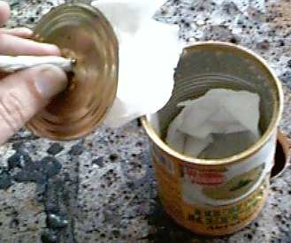
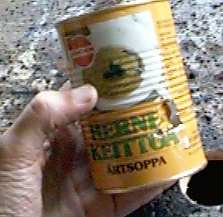
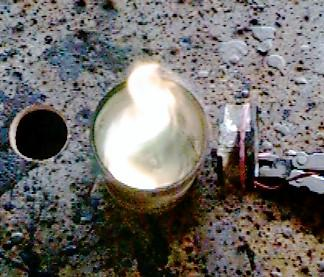

Hernerokkatölkistä valmistetaan äärimmäisen luotettava ja turvallinen kerosiinikeitin seuraavanlaisella valmistusprozessilla:
1. Irroitetaan tölkin kansi kokonaan ja tyhjennetään tölkki.
2. Levitetään tölkin pohjalle parin sentin löyhä kerros vessapaperia.

3. Tehdään tölkin kanteen pieni reikä ja vedetään hieman paperia reijästä läpi.
4. Tiputetaan kansi tölkin pohjalle.
5. Leikataan puukolla tai saksilla tölkin kylkeen noin 3 sentin korkeudelle peukalonpään kokoinen C-kirjaimen muotoinen viilto. -- Kun syntynyt läppä painetaan pari milliä sisään, reijästä sisäänsyöksyvä ilmavirta aiheuttaa tölkin sisään pyörremäisen ilmavirtauksen.

Lopuksi kaadetaan tölkkiin korkillinen petroolia ja sytytetään. Hetken päästä kannen alla oleva kerosiini alkaa kaasuuntua ja tuli leviää kannen reunoille. Tässä vaiheessa käynnistetään C-muotoisen aukon edessä pieni yksiwattinen Pentium-tuuletin.
Tölkkiin syntyy pyörivä sinivalkoinen roihu, jonka intensiteettiä ja laatua voi säätää tuulettimen sijaintia tai tehoa säätämällä. Optimaalisesti palaminen tapahtuu sinisellä liekillä ja vain tölkin sisällä.

Tuli sammuu itsestään kun tuuletin sammutetaan ja tölkin suu suljetaan kattilan pohjalla. Turvallista erittäin.
Tämä konstruktio on vuosikausia kestäneen kokeellisen tutkimustyön tulos. Typerät parannusehdotuksenne voitte postittaa vaikka valkoiseen taloon.
Tämän jälkeen ei yhdenkään naparetkeilijän tarvitse ainakaan keittimen hajoamisen takia kotiin palata..
Timo Noko (c) 1999